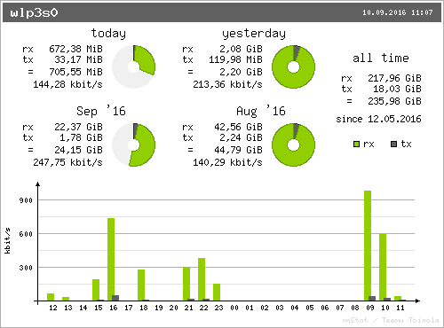
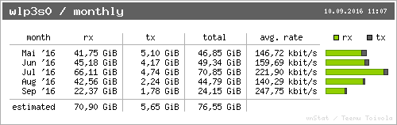

Do you have any idea how much internet traffic (volume) you need? How much do you download / upload on a usual day?
I didn't have any idea, so I started recording it. In this article I will show you the results.
For the context: A couple of internet providers moved from flatrates to volume contracts. For example, 1&1 "DSL Basic" contract is for 100 GB of internet traffic per month (and they unashamedly still call it an internet flat rate).
Anyway, this made me wonder how much internet traffic I need. So I started
recording it with vnstat.
How to measure
Install vnstat and vnstati:
$ sudo apt-get install vnstat vnstati
Then execute
$ ip link
1: lo: <LOOPBACK,UP,LOWER_UP> mtu 65536 qdisc noqueue state UNKNOWN mode DEFAULT group default qlen 1
link/loopback 00:00:00:00:00:00 brd 00:00:00:00:00:00
2: enp0s31f6: <NO-CARRIER,BROADCAST,MULTICAST,UP> mtu 1500 qdisc pfifo_fast state DOWN mode DEFAULT group default qlen 1000
link/ether 98:76:54:32:10:45 brd ff:ff:ff:ff:ff:ff
3: wlp3s0: <BROADCAST,MULTICAST,UP,LOWER_UP> mtu 1500 qdisc mq state UP mode DORMANT group default qlen 1000
link/ether 12:34:56:78:90:ab brd ff:ff:ff:ff:ff:ff
to find your network interface. In my case, it is wlp3s0. In most cases, it
will be wlan0 or eth0 if you use a cable.
I was mainly interested in WLAN. In my case, this is the interface wlp3s0.
Now I have to enable monitoring of that interface. You might need super user
(root) for that:
$ vnstat -u -i wlp3s0
To get the nice images, you have to execute the following code (with your
network interface). It will create a summary.png image:
$ vnstati -vs -i wlp3s0 -o ~/summary.png
{kind=link}

Results
To interpret the following, you should know that rx is the received traffic
and tx is the transmitted traffic.
General
I was not at home most of August, so the results you see in the image above might be different than usual. So let's get a summary for this year:
$ vnstati -vs -m -i wlp3s0 -o ~/summary.png
{kind=link}

Now you have to realize that I am only recording my notebook. I have a tablet and a smartphone, too. I also only recorded WLAN, but I use the cable when I want to download / upload a lot. Also, my connection is not so fast. This means when I watch videos, I usually don't watch them in HD (although my computer would be awesome for that). So 50 GB to 70 GB download and about 5 GB to 6 GB upload might be a conservative estimate of what I need.
Watching News
Watching the German 20 o'clock news (15 minutes on tagesschau.de) is about 200 MiB rx and about 3 MiB tx.
Publishing Blog articles
For ml-ka.de it is less than 10 KiB.